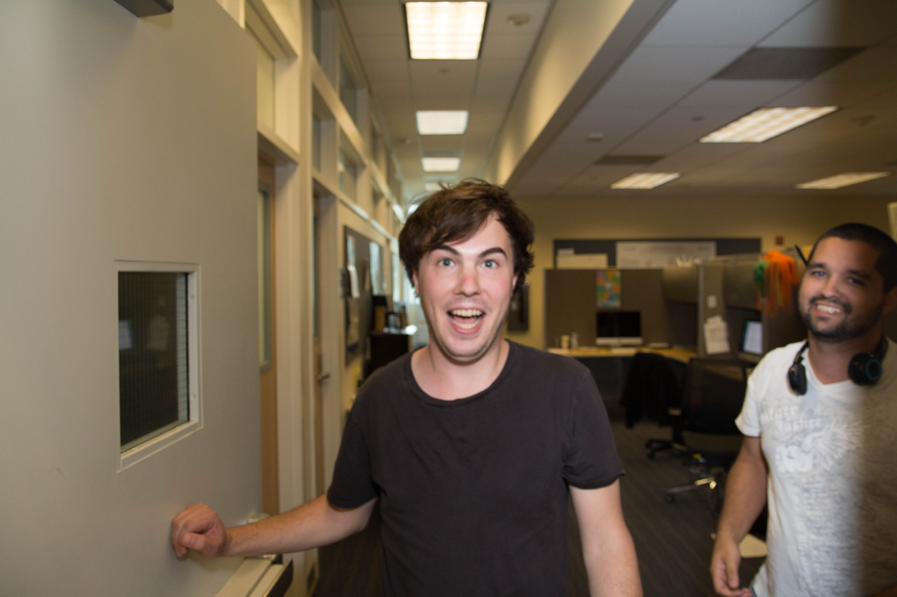

Alex Carlin
Computational biologist and musician who loves making things

A surprised me (center) and Steve Bertolani (right) in our lab at Davis. Photo credit: James Lucas (2017)
Science
-
Writing on biology and computers
My personal blog where I write about biology, computers, and the intersection where I work. It's an exciting time to be working at the intersection of machine learning and biology
• Featured: “Simple, hackable transformers for protein design with generative ML”
• Featured: “Inverse folding unrolled”
-
Enzyme design with generative ML
My primary interest currently is generative ML for protein design. I've previously led numerous protein AI projects at Ginkgo Bioworks—where I worked from 2017 to 2023—including benchmarking, scaling, and improving deep neural networks for protein design across dozens of enzyme classes.
-
Insanely challenging protein design ML benchmarks
This project advances the field of machine learning for protein engineering via the creation of a large, high-quality dataset of kinetic constants for designed enzymes. It includes a complete dry- and wet-lab course in computational protein design and enzyme kinetic characterization suitible for the undergraduate level
Music
-
Big Boogie, short essays on blues guitar techniques
-
Car Chase, 2019–, beats
-
The Gold Souls, 2015–2017, songwriting and guitar
Contact
{my first name}@inkisbetter.com
Located in California